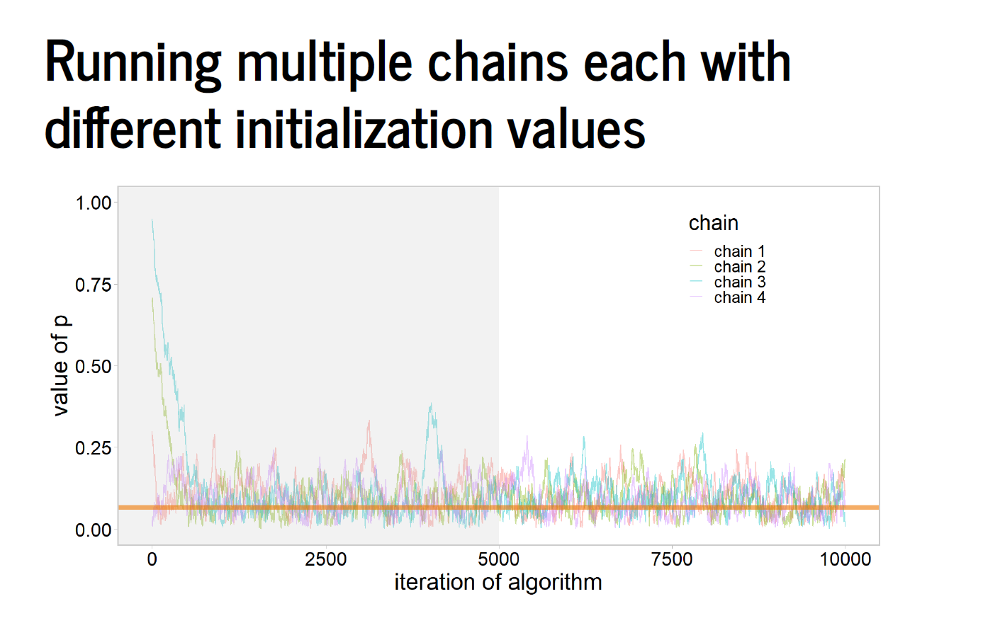
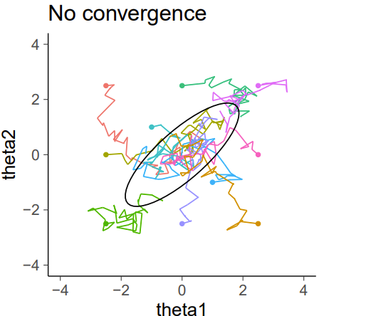
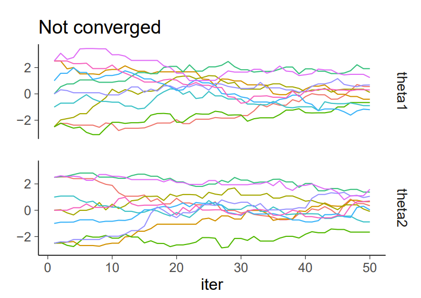
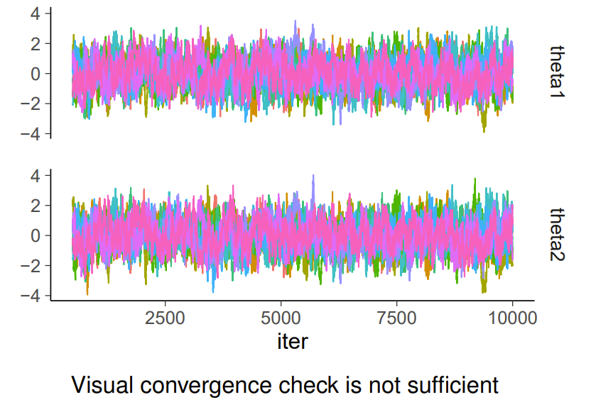

FW 891
Click here to view presentation online
13 September 2023
https://mc-stan.org/misc/warnings.html
“When you have computational problems, often there is a problem with your model [rather than the software]”—— Andrew Gelman
McElreath 2023
How to deal with DTs:
adapt_delta, > 0.8
adapt_delta, so this results in a smaller step size and (sometimes) fewer divergencesFirst warning indicates that the standard deviation parameter of the normal distribution is zero, but it must be positive for Stan to compute the density function
The second message indicates that the gradient of the target (as computed by Stan’s automatic differention) is infinite, indicating numerical problems somewhere in the model but unfortunately without clear information about where exactly.

See here:



https://mc-stan.org/misc/warnings.html; Gelman et al. 2003
https://mc-stan.org/docs/reference-manual/effective-sample-size.html
max_treedepth parameter, where maximum number of steps = 2^max_treedepth<https://mc-stan.org/misc/warnings.html#bulk-and-tail-ess >
Example:
energy__ output from Stan’s samplers is used to diagnose the accuracy of HMCprint() statements that can print literal strings and the values of expressionsprint(): accepts any number of argumentshttps://mc-stan.org/docs/reference-manual/print-statements.html
print()target()
target() is the log density accumulator, and is actually a reserved word in Stanhttps://mc-stan.org/docs/reference-manual/print-statements.html
traceback() and browser()traceback()browser()browser()browser() in it to win ithttps://stat.ethz.ch/R-manual/R-devel/library/base/html/browser.html
browser()print() statementstraceback() and browser()Betancourt, M. 2016. Diagnosing suboptimal cotangent disintegrations in Hamiltonian Monte Carlo. https://arxiv.org/pdf/1604.00695.pdf
Gelman et al. 2003. Bayesian Data Analysis.
McElreath 2023. Statistical Rethinking. Second Edition.
Stan documentation. 2023. https://mc-stan.org/docs/reference-manual/index.html